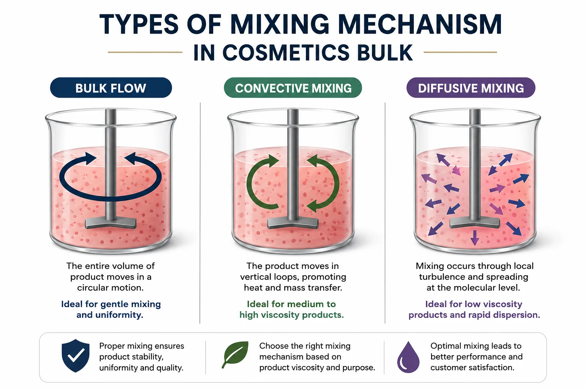
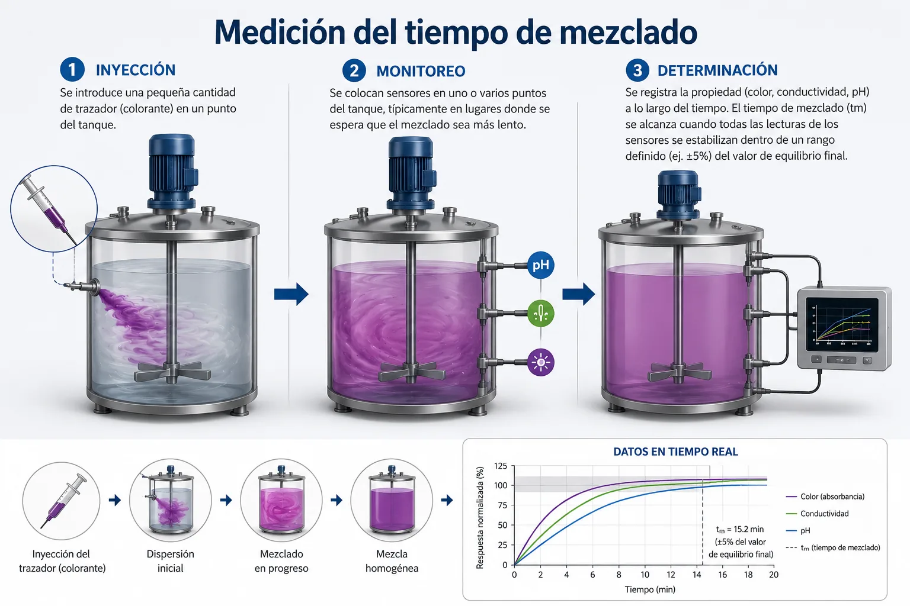
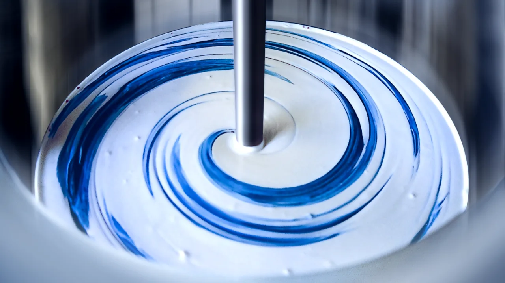
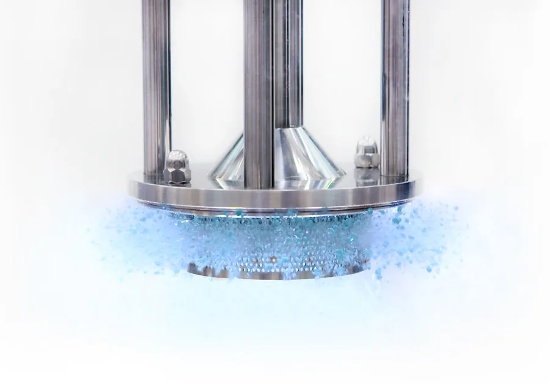

Universidad de los AndesIngeniería Química y de Alimentos
IQYA-2031 · Sesión 10
Mezclado de fluidos
Mecanismos, tiempo de mezclado y retos del mezclado en la planta de pectina
CursoProyecto de Operaciones Unitarias
Proyecto del semestrePlanta de pectina de grado alimentario
Sesión 10
Objetivos
01Diferenciar agitación y mezcladoCausa vs. efecto — cuál es el input y cuál es el resultado del proceso
02Identificar los mecanismos de mezcladoConvección, dispersión turbulenta y difusión molecular — escala e importancia de cada uno
03Cuantificar la eficiencia con $t_m$Definición, métodos de medición, factores que influyen y costo energético de reducirlo
04Analizar los retos de mezclado realAlta viscosidad (laminar) y líquidos inmiscibles — soluciones de diseño para cada caso
Esta sesión complementa la Sesión 09 de Agitación: allí diseñamos el impulsor; aquí evaluamos qué tan bien distribuye lo que mezcla.
Conceptos clave
¿Agitación o mezclado?
Son términos relacionados pero distintos — confundirlos lleva a especificaciones incorrectas.
CAUSA
Agitación
Input de energía mecánica al fluido mediante un impulsor en movimiento. Es la acción que inicia el proceso.
Se cuantifica con velocidad de giro N y potencia P
Genera un patrón de flujo (axial, radial, tangencial)
Existe aunque no haya mezcla neta (tanque de un solo componente)
EFECTO
Mezclado
Reducción de la no-uniformidad en composición, temperatura o fase de un sistema. Es el resultado del proceso.
Se cuantifica con el tiempo de mezclado $t_m$
Depende de cómo se distribuye la energía de agitación en el fluido
Es el objetivo de diseño del sistema de agitación
Principio rector: La agitación es la causa; el mezclado es el efecto. Un sistema bien agitado no garantiza un buen mezclado si la energía no se distribuye correctamente en el volumen del tanque.
Clasificación
Equipos de mezclado
Mezcladores de tambor / ribbon blender — usados en pastas y sólidos de alta viscosidad
Los equipos de mezclado se clasifican según la geometría, el principio de operación y la viscosidad del fluido a manejar.
Tanques agitados mecánicamente — los más comunes en IQ; impulsor rotatorio sumergido en el fluido
Mezcladores estáticos (in-line) — sin partes móviles; elementos fijos que dividen y recombinan el flujo
Mezcladores de tambor / ribbon blender — cinta helicoidal en recipiente horizontal; pastas y sólidos
Mezcladores de alta cizalla (rotor-estátor) — emulsiones finas y dispersiones
Kneaders y amasadoras — polímeros fundidos, cauchos y masas de viscosidad muy alta
En este curso: nos enfocamos en tanques agitados mecánicamente, que son los equipos del reactor de extracción y los tanques de precipitación de la planta de pectina.
Mecanismos
Los tres mecanismos del mezclado
El mezclado en un tanque agitado no ocurre por un único mecanismo sino por la acción combinada en cascada de tres procesos que operan a escalas espaciales distintas.
Convección (bulk flow) Movimiento a gran escala generado directamente por el impulsor — es el mecanismo más rápido y dominante
Dispersión turbulenta (eddy diffusion) Remolinos (eddies) a escala intermedia — actúa cuando Re > 10⁴ y distribuye la materia a nivel de milímetros
Difusión molecular Escala molecular — muy lento; completa el mezclado final pero es secundario a escala industrial

Los tres mecanismos actúan secuencialmente: la convección distribuye el material a gran escala; la turbulencia lo divide a escala media; la difusión molecular completa la homogeneización a escala atómica.
Mecanismo 1 de 3
Convección (bulk flow)
El impulsor genera corrientes a gran escala que mueven el fluido en todo el volumen del tanque.
Escala
Gran escala — el tanque completo
El flujo convectivo abarca todo el volumen útil del recipiente. Un impulsor axial genera una columna de descarga desde el impulsor hasta el fondo y retorno por las paredes (o viceversa).
Velocidad
El más rápido y dominante
La convección distribuye el trazador en el tanque en segundos. Determina el tiempo mínimo posible de mezclado: sin convección suficiente, los otros mecanismos no pueden compensar.
Diseño
Determinado por el tipo de impulsor
Impulsores axiales (hélice, PBT, hidrofoil) son superiores para homogenización: generan más caudal de descarga $Q$ con menos potencia $P$ que los radiales.
Mayor $Q/P$ → menor $t_m$ por unidad de energía
Los baffles convierten flujo tangencial en axial-radial y amplifican la convección
La relación entre caudal de descarga $Q$ y el cubo del diámetro del impulsor $D^3$ define el número de caudal $N_Q = Q / (N D^3)$, que cuantifica la efectividad convectiva de cada tipo de impulsor.
Mecanismo 2 de 3
Dispersión turbulenta (eddy diffusion)
La turbulencia genera remolinos (eddies) a escala intermedia que distribuyen la materia de forma caótica y eficiente.
Escala: entre milímetros y centímetros — intermedia entre la escala del tanque y la molecular
Mecanismo: la cascada de Kolmogorov — los vórtices grandes se dividen en vórtices más pequeños, transfiriendo energía cinética hacia abajo hasta alcanzar la escala de Kolmogorov $\eta = (\nu^3/\varepsilon)^{1/4}$
Activación: requiere Re > 10⁴ para ser verdaderamente turbulento. Por debajo de este valor, la dispersión turbulenta disminuye drásticamente
Importancia industrial: en fluidos de baja viscosidad (agua, soluciones diluidas) es el mecanismo más importante después de la convección
Limitación: no opera en fluidos de alta viscosidad (laminares) — allí, la difusión molecular queda como único mecanismo de mezcla a pequeña escala
$\varepsilon$ — tasa de disipación de energía turbulenta (m²/s³)
Los eddies de tamaño $\eta$ son los más pequeños que genera la turbulencia. La difusión molecular completa el mezclado por debajo de esta escala.
En la planta de pectina: el reactor de extracción opera con soluciones ácidas diluidas de baja viscosidad → Re > 10⁴ → la dispersión turbulenta es activa y el tm será corto.
Mecanismo 3 de 3
Difusión molecular
La difusión molecular es el mecanismo más lento — actúa a escala atómica y completa el mezclado final.
Escala: molecular — nanómetros a micrómetros
Fuerza impulsora: el gradiente de concentración (segunda ley de Fick)
Velocidad: muy lenta — los coeficientes de difusión en líquidos son del orden de $D_{AB} \sim 10^{-9}$ m²/s
Papel industrial: secundario en reactores de gran escala; la convección y la turbulencia lo reducen a ser un mecanismo de "último kilómetro"
Relevancia en viscosos: cuando Re < 10 (laminar), la dispersión turbulenta desaparece y la difusión molecular queda como el único mecanismo de pequeña escala → mezcla muy lenta
El tiempo de igualación de concentración por difusión pura escala como $t \sim L^2 / D_{AB}$. Para $L = 1$ mm, $t \approx 1000$ s — por eso la convección es esencial.
Escala
Mecanismo dominante
Velocidad típica
Tanque (0.1–10 m)
Convección
Segundos
Meso (0.001–0.1 m)
Dispersión turbulenta
Segundos a minutos
Molecular (<1 μm)
Difusión molecular
Minutos a horas
Los tres mecanismos actúan en cascada: la convección lleva el material al vecindario, la turbulencia lo entrega a los eddies más pequeños, y la difusión molecular completa la homogeneización.
Parte II
Tiempo de mezclado: la métrica de rendimiento
¿Qué tan rápido se distribuye lo que se mezcla? El tiempo de mezclado $t_m$ cuantifica la eficiencia del proceso y tiene implicaciones directas sobre el consumo energético.
Tiempo de mezclado
Definición: $\theta_{95}$ o $t_{95}$
El tiempo de mezclado es un parámetro empírico que se mide experimentalmente.
Definición
$\theta_{95}$ — el tiempo para el 95% de homogeneidad
Tiempo requerido para que una perturbación (trazador) se distribuya en el volumen del tanque hasta alcanzar el 95% del valor de equilibrio final.
El 95% es una convención práctica: llegar al 99% requeriría 3–5 veces más tiempo y energía.
Impulsores y $t_m$
Axiales vs. radiales para homogenización
Para mezclado de fases miscibles (homogenización), los impulsores de flujo axial producen $t_m$ más cortos que los radiales con la misma potencia.
Axiales (PBT, hidrofoil): mayor caudal $Q$ → mejor circulación → menor $t_m$
Radiales (Rushton): mayor cizalla → mejor para dispersión gas-líquido e inmiscibles, pero mayor $t_m$ para homogenización
Número de mezclado $N_m$ (Mixing number)
$$N_m = N \cdot t_m = \text{cte}$$
A las mismas condiciones geométricas, el producto de la velocidad de agitación $N$ y el tiempo de mezclado $t_m$ es aproximadamente constante para un tipo de impulsor dado. Esto permite escalar $t_m$ cuando se cambia $N$.
Medición de $t_m$
Cómo se mide $\theta_{95}$
Existen tres métodos experimentales principales, cada uno con ventajas y limitaciones según el fluido y la escala.

El proceso de medición sigue tres pasos: inyección del trazador → monitoreo continuo → determinación del $t_m$ cuando todas las sondas se estabilizan dentro de ±5%
Método 1
Conductividad eléctrica
Se inyecta una solución salina concentrada como trazador. Sondas de conductividad miden en tiempo real la distribución del trazador. Ventaja: cuantitativo y no invasivo. El más usado en escala piloto e industrial.
Método 2
Colorimétrico (procesamiento digital)
Se inyecta un colorante y se captura video del tanque. El procesamiento de imágenes calcula la varianza de color hasta que es uniforme. Ventaja: visualización directa del patrón de mezclado.
Método 3
Indicador de pH (decoloración)
Se usa un indicador ácido-base que decolora al neutralizarse. Útil especialmente en fluidos viscosos donde los otros métodos son difíciles de implementar.
Medición — detalle del proceso
El proceso paso a paso
Los tres pasos del protocolo de medición experimental son siempre los mismos, independiente del método de detección elegido.
1
Inyección del trazadorSe introduce una pequeña cantidad de trazador en un punto específico del tanque. El trazador puede ser: sal (conductividad), colorante (colorimétrico) o ácido/base (pH). La cantidad debe ser suficiente para detectar pero no alterar las propiedades del fluido.
2
Monitoreo continuoSe colocan sensores en uno o varios puntos del tanque, preferiblemente en las zonas donde se espera que el mezclado sea más lento: esquinas, lejos del impulsor, cerca del fondo o en zonas de bajo flujo. Se registra la señal continuamente.
3
Determinación del $t_m$Se registra la propiedad (color, conductividad, pH) a lo largo del tiempo. El $t_m$ se alcanza cuando todas las lecturas de los sensores se estabilizan dentro de un rango de ±5% del valor de equilibrio final.
Criterio del ±5%: es la convención estándar para $\theta_{95}$. El punto de muestreo más desfavorable (el que tarda más en igualarse) determina el $t_m$ del sistema — por eso los sensores se ubican estratégicamente en zonas de mezclado lento.
Factores
¿Qué determina el tiempo de mezclado?
Cinco grupos de variables controlan $t_m$ — conocerlas permite optimizar el diseño.
Velocidad de agitación (N)Inversamente proporcional: a mayor $N$, menor $t_m$. Relación directa con el número de mezclado $N \cdot t_m = \text{cte}$. El factor de control más accesible en operación.
Viscosidad del fluido (μ)A mayor viscosidad, mayor $t_m$. En fluidos viscosos se pierde la dispersión turbulenta y solo queda la difusión molecular — el proceso es mucho más lento.
Tipo y tamaño del impulsorLa geometría afecta la distribución de flujo. Los impulsores axiales producen mayor caudal de circulación $Q$ a igual potencia → menor $t_m$ para homogenización de miscibles.
Geometría del recipienteLa forma del tanque, la relación $H/T$ y el número, ancho y altura de los baffles afectan los patrones de flujo y, en consecuencia, la eficiencia del mezclado en todo el volumen.
Ubicación de la alimentaciónEl punto de inyección del trazador o del reactivo afecta la medición y la operación real. Inyectar cerca del impulsor puede subestimar el $t_m$; lejos del impulsor, sobreestimarlo.
Régimen de flujo (Re)El número de Reynolds determina qué mecanismos están activos. Re > 10⁴: convección + turbulencia + difusión (rápido). Re < 10: solo convección + difusión (muy lento).
Costo energético
Relación entre $t_m$ y potencia
Reducir el tiempo de mezclado tiene un costo energético desproporcionado — una relación con implicaciones directas para el diseño del reactor de extracción.
Correlación empírica
$$t_m \propto \left(\frac{T^3}{P}\right)^{1/3}$$
$T$ — diámetro del tanque (m)
$P$ — potencia del agitador (W)
La relación $T^3/P$ representa el volumen del tanque dividido por la densidad de potencia
Implicación energética clave
Despejando: $P \propto T^3 / t_m^3$
Reducir $t_m$ en un 20% (factor 0.8) requiere aumentar la potencia en un factor $1/0.8^3 \approx 1.95$, es decir, casi duplicar la potencia.
Principio de diseño
En ingeniería química, el $t_m$ no se minimiza por sí solo, sino que se diseña al valor mínimo que requiere el proceso — la cinética de reacción, la transferencia de calor o la calidad del producto imponen el valor objetivo.
Diseñar para un $t_m$ más corto del necesario desperdicia energía sin beneficio en el producto.
Ejemplo de escala
Si el reactor de extracción de pectina requiere $t_m \leq 30$ s y el diseño actual da 36 s:
Reducir 17% → necesita $\approx$ 60% más de potencia
Alternativa: optimizar la posición de los baffles o cambiar al tipo de impulsor axial
Parte III
Retos del mezclado en fluidos reales
No todos los fluidos mezclan igual. Dos casos especiales rompen los supuestos del mezclado ideal y exigen soluciones de diseño particulares.
2retos: alta viscosidad y líquidos inmiscibles
Reto 1 de 2
Retos: alta viscosidad
Cuando la viscosidad del fluido es alta, el régimen de flujo cambia de turbulento a laminar (Re < 10) y los mecanismos de mezclado disponibles se reducen drásticamente.

Patrón de mezclado laminar en un fluido de alta viscosidad. Los filamentos del colorante persisten mucho tiempo: la turbulencia no existe para dispersarlos.
Cuando Re < 10: el régimen es completamente laminar. La dispersión turbulenta desaparece — solo quedan convección (lenta y ordenada) y difusión molecular (muy lenta).
Comportamiento del fluido:
El flujo es ordenado y predecible; el fluido se "adhiere" a las palas del impulsor
No hay dispersión turbulenta — desaparece con la turbulencia
La difusión molecular es el único mecanismo de mezcla a pequeña escala
Se pueden crear "zonas muertas" cerca de las paredes donde el fluido apenas se mueve
El $t_m$ puede ser órdenes de magnitud mayor que en condiciones turbulentas equivalentes
Reto 1 de 2 — Soluciones
Alta viscosidad: soluciones de diseño
Los impulsores convencionales no funcionan en fluidos laminares. Se requieren geometrías especializadas que recorran todo el volumen del tanque.
Principio de diseño
Grandes diámetros a baja velocidad
Se requieren impulsores con una relación diámetro-tanque $D/T > 0.5$ (a veces hasta $D/T \approx 0.95$). Operan a baja velocidad para no sobresaturar la potencia, pero cubren todo el diámetro del tanque.
Mayor área de barrido → reduce zonas muertas
Baja velocidad → menor desgaste mecánico
Sin baffles (crean resistencia innecesaria en laminar)
Impulsor 1
Cinta helicoidal (helical ribbon)
Cinta continua enrollada helicoidalmente alrededor del eje, que recorre desde el fondo hasta la superficie. Genera un flujo axial-toroidal que asciende por el centro y desciende por las paredes (o viceversa).
Mueve material cerca de las paredes y el fondo
Excelente para $D/T \approx 0.9$ y $Re < 100$
Usada en: polímeros, betún, almidones
Impulsor 2
Impulsor ancla
Sigue la forma interna del fondo y las paredes del tanque, con un espacio mínimo (<5 mm). "Raspa" continuamente las superficies para impedir la formación de costras y zonas muertas.
Ideal cuando hay transferencia de calor por chaqueta
El raspado mejora el coeficiente $h$ en la pared
Usada en: jarabes, cremas cosméticas, salsas
En polímeros, látex, jarabes concentrados y cualquier fluido con $\mu > 10$ Pa·s, los impulsores convencionales (PBT, Rushton) son inútiles para el mezclado. La cinta helicoidal y el ancla son las únicas soluciones viables.
Reto 2 de 2
Mezclado de líquidos inmiscibles
El objetivo no es crear una solución, sino una dispersión o emulsión estable. Las fuerzas involucradas son diferentes a las del mezclado de miscibles.
El reto: coalescencia
La tensión interfacial entre las fases busca minimizar el área de contacto → las gotas se reagrupan (coalescen) espontáneamente. El impulsor debe combatir este fenómeno continuamente.
Proceso de dispersión:
Alta cizalla (high shear) es indispensable para romper las gotas de la fase dispersa a un tamaño controlado
El tamaño de gota $d$ disminuye a mayor densidad de potencia: $d \propto (P/V)^{-0.4}$
El número de Weber interfacial $We = \rho N^2 D^3 / \sigma$ cuantifica la capacidad de romper gotas frente a la tensión superficial $\sigma$
Se requiere $We$ suficientemente alto para superar la tensión interfacial

Dispersor de alta cizalla (tipo rotor-estátor): el cabezal genera una zona de altísima cizalla localizada que rompe gotas y dispersa burbujas. La $P/V$ en esa zona supera en 10–100× la del tanque agitado.
Reto 2 de 2 — Diseño
Diseño del sistema para líquidos inmiscibles
La selección del impulsor y el parámetro $P/V$ son las decisiones de diseño críticas para emulsiones y dispersiones.
Dispersión gruesa
Turbina Rushton (RT-6)
Los impulsores de flujo radial como la turbina Rushton son efectivos para dispersión líquido-líquido. La zona de descarga del impulsor genera una cizalla muy alta que rompe las gotas de la fase dispersa.
Gotas de tamaño: 0.5–5 mm típicamente
Buena para dispersión aceite-agua, extracción líquido-líquido
La potencia por unidad de volumen ($P/V$) controla el tamaño de gota
Emulsiones finas
Turbinas de alta cizalla (multi-palas)
Para emulsiones finas, se utilizan turbinas de alta cizalla con múltiples palas (8–16) y alta velocidad de rotación. El principio rotor-estátor maximiza la cizalla por unidad de volumen.
Para dispersiones, no es la potencia total sino la densidad de potencia lo que determina el tamaño de gota.
$$\frac{P}{V} = \frac{N_p \rho N^3 D^5}{V}$$
A mayor $P/V$, gotas más pequeñas y emulsión más estable.
Parámetro de escala para inmiscibles: mientras que para homogenización se escala manteniendo $N \cdot t_m = \text{cte}$, para dispersiones el escalamiento correcto es mantener $P/V = \text{cte}$ entre la escala piloto y la escala industrial.
Proyecto de pectina
Aplicación al proyecto
En los reactores de extracción ácida, un mezclado eficaz es fundamental para la calidad y el rendimiento de la pectina producida.
Distribución de ácido
Hidrólisis homogénea del protopectina
El ácido (HCl o H₂SO₄ diluido) debe distribuirse uniformemente en toda la corteza de cítrico para garantizar una hidrólisis homogénea del protopectina.
Gradientes de concentración de ácido → extracción incompleta en zonas de baja concentración
El impulsor axial genera la convección necesaria para distribuir el ácido desde el punto de adición
Temperatura homogénea
Evitar degradación de la pectina
La extracción ocurre a 70–85°C. La pectina se degrada (β-eliminación) si existen puntos calientes superiores a 90°C.
El mezclado distribuye el calor de la chaqueta uniformemente en el volumen
Un buen $t_m$ garantiza que no haya estratificación térmica
Suspensión de sólidos
Extracción completa del bagazo de cítrico
La corteza de cítrico particulada tiende a sedimentar. Debe mantenerse en suspensión completa para maximizar el área de transferencia de masa entre el ácido y los sólidos.
Velocidad $N_{js}$ (Zwietering) debe superarse en operación
Sedimentación → extracción incompleta y variabilidad en la calidad del producto
Riesgo de un mezclado deficiente: extracción incompleta e inhomogénea de la pectina, variabilidad en el grado de metoxilación (DM), mayor consumo de ácido y reducción del rendimiento másico. El diseño del agitador es crítico para la calidad del producto final.
Cierre
Conclusiones
Conclusión 1
Mezclado = objetivo final de la agitación
El mezclado se logra a través de una cascada de tres mecanismos que actúan en escalas decrecientes: convección (gran escala, dominante) → dispersión turbulenta (escala intermedia, activa solo si Re > 10⁴) → difusión molecular (escala molecular, siempre activa pero muy lenta).
Conclusión 2
El $t_m$ es la métrica de rendimiento
El tiempo de mezclado $\theta_{95}$ cuantifica la eficiencia del sistema. Reducirlo es energéticamente costoso: reducir $t_m$ un 20% requiere casi duplicar la potencia ($P \propto t_m^{-3}$). El diseño debe establecer el valor mínimo que requiere el proceso, no el mínimo posible.
Conclusión 3
El diseño debe adaptarse al fluido
Los fluidos reales plantean retos específicos: alta viscosidad (Re < 10) requiere impulsores de gran diámetro como cinta helicoidal o ancla; fases inmiscibles requieren alta cizalla y el parámetro $P/V$ como criterio de diseño y escalamiento.
Sesión 10
Ahora tiene las herramientas para evaluar la calidad del mezclado en su reactor de extracción.
A trabajarPara el reactor de extracción: estime el régimen de flujo (Re), seleccione el impulsor adecuado y calcule el $t_m$ requerido para garantizar la homogeneización del ácido antes de que la reacción de hidrólisis avance significativamente.